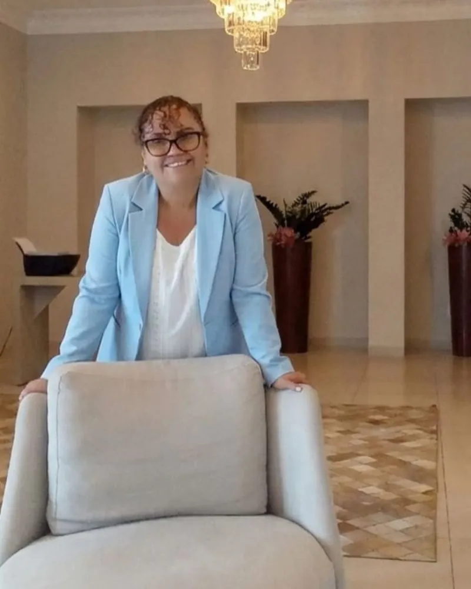

PALESTRAS E TREINAMENTOS
Saúde emocional e desenvolvimento nas organizações
Palestras e treinamentos personalizados para empresas, instituições e equipes que desejam promover saúde mental, relações mais saudáveis e desenvolvimento humano. Selecione um tema para conversar pelo WhatsApp.
-
Burnout e prevenção ao esgotamento
-
Desenvolvimento humano e autoconhecimento
-
Ansiedade e gestão emocional
-
Luto e processos de superação
-
Saúde mental no trabalho
-
Inteligência emocional
Sua organização precisa de um tema específico?
Solicitar informações pelo WhatsAppATENDIMENTO INDIVIDUAL
Um espaço de acolhimento, autoconhecimento e desenvolvimento
Cada pessoa tem sua própria história. Conheça alguns temas que podem fazer parte de uma conversa com a Dra. Edilamar. Clique no assunto desejado para solicitar informações pelo WhatsApp.
-
Autoconhecimento
-
Ansiedade e gestão emocional
-
Saúde emocional
-
Luto e processos de mudança
-
Relacionamentos
-
Desenvolvimento pessoal
Quer saber mais sobre as possibilidades de atendimento?
Solicitar informações pelo WhatsApp
SOBRE MIM
Cuidado emocional com acolhimento, ética e excelência.
Edilamar Erica Ferreira, conhecida carinhosamente como Dra. Dila, é palestrante, instrutora e especialista em comportamento humano e saúde emocional, com mais de 15 anos de estudos e experiências dedicados ao desenvolvimento humano.
Fundadora da E.CLINIC, realiza atendimentos presenciais e on-line, oferecendo um cuidado humanizado fundamentado na Psicanálise, na Neurociência e em práticas baseadas em evidências, sempre respeitando a individualidade, a história e as necessidades de cada pessoa.
Seu propósito é ajudar pessoas a compreenderem melhor suas emoções, encontrarem equilíbrio emocional, fortalecerem seus relacionamentos e desenvolverem uma vida mais saudável, consciente e plena.
Talvez sua dúvida também seja a de outras pessoas.
Encontre respostas para algumas das dúvidas mais comuns antes de dar o primeiro passo.
Como funciona o primeiro atendimento?
O primeiro atendimento é um momento de acolhimento e escuta, dedicado a compreender suas necessidades, sua história e o que motivou a busca por ajuda. A partir dessa conversa, são avaliados os próximos passos do acompanhamento.
O atendimento pode ser presencial ou online?
As modalidades de atendimento e a disponibilidade de horários podem ser consultadas diretamente com a Dra. Edilamar. Entre em contato pelo WhatsApp para receber as orientações.
Preciso saber exatamente o que estou sentindo para procurar ajuda?
Não. Você não precisa ter todas as respostas ou saber explicar exatamente o que está sentindo. Ter dúvidas, sentir-se confuso ou perceber que algo não está bem já pode ser um motivo para buscar acolhimento e orientação.
Em quais situações posso procurar ajuda?
Você pode buscar ajuda em momentos de ansiedade, dificuldades nos relacionamentos, mudanças importantes na vida, conflitos familiares, sobrecarga emocional ou quando sentir necessidade de se conhecer melhor e cuidar do seu bem-estar.
Qual abordagem é utilizada nos atendimentos?
Para conhecer a abordagem utilizada pela Dra. Edilamar e entender como ela se aplica às suas necessidades, entre em contato diretamente com a profissional.
A Dra. Edilamar atende questões relacionadas a filhos?
As possibilidades de atendimento relacionadas a filhos e às questões familiares devem ser confirmadas diretamente com a Dra. Edilamar. Entre em contato para explicar sua necessidade e receber as informações adequadas.
Como faço para entrar em contato?
Você pode entrar em contato pelo botão de WhatsApp disponível no site para tirar dúvidas sobre os atendimentos e consultar as informações para agendamento.